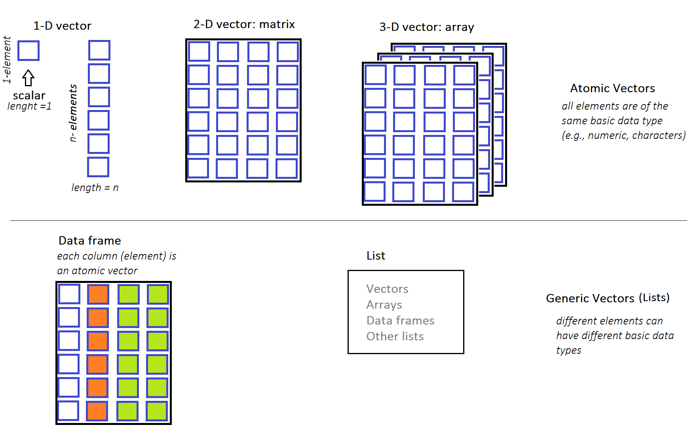

7 Atomic vectors
When we have finished this chapter, we should be able to:
7.1 Introduction to vectors in R
The most fundamental concept in R are the vectors. Vectors come in two broad types: atomic vectors and generic vectors (lists) . The atomic vectors must have all elements of the same basic type (e.g., numeric, characters). On the contrary, in the lists different elements can have different basic types (e.g., some elements may be numeric and some characters).
The R language supports many types of data structures that we can use to organize and store information. We will see that complex structures such as matrices, arrays, and data frames can be created. Each data structure type serves a specific purpose and might differ in terms of the type of data it can hold and its structural complexity. These data structures are schematically illustrated in Figure 7.1.
7.2 Atomic vectors
Atomic vectors in R are one-dimensional data structures. This means that they consist of a single sequence of elements of the same data type arranged along a single dimension. Each element within the vector is uniquely identified by its position within this sequence.
There are four primary types of atomic vectors (also known as “atomic” classes):
- logical
- integer
- double
- character (which may contain strings)
As a group integer and double vectors are considered numeric vectors.
There are also two rare types: complex and raw but we won’t discuss them further because they are not used in this textbook.
Let’s start by understanding one-element vectors, the most basic form of atomic vectors in R. Afterward, we’ll explore longer vectors to gain insight into their properties and practical uses.
7.2.1 One-element atomic vectors
Individual numbers or strings are one dimensional (1-D) vectors of length one and in some instances we call them scalars. Therefore, an one-element vector (oev) is just a single value like a number and they can be used to construct more complex objects (longer vectors). We present some examples of one-element vectors for each of the four primary types (in order from least to most general type).
Logical one-element vector
Logical values are boolean values of TRUE or FALSE which can be abbreviated, when we type them as T or F (not recommended). Examples of logical one-element vectors (oev) follows:
oev_a <- TRUE # assign the logical TRUE to an object named oev_a
oev_a # call the object with its name[1] TRUEoev_b <- FALSE # assign the logical FALSE to an object named oev_b
oev_b # call the object with its name[1] FALSEoev_c <- T
oev_c[1] TRUEoev_d <- F
oev_d[1] FALSEInteger one-element vector
Even when we observe numbers like 1 or 2 in the console, internally, R may store them as 1.00 or 2.00. To explicitly specify integer numbers,in R, we need to append an “L” suffix, as demonstrated in the following examples:
oev_e <- 3L
oev_e[1] 3oev_f <- 100L
oev_f[1] 100Double one-element vector
Doubles, which represent real numbers, can be expressed either in decimal format (e.g., 0.000017) or in scientific notation (e.g., 1.7e-5).
oev_g <- 0.000017
oev_g [1] 1.7e-05oev_scientific <- 1.7e-5
oev_scientific [1] 1.7e-05Character one-element vector
One-element vectors can also be characters (also known as strings). In R, we denote characters using single '' or double "" quotation marks. Internally R stores every string within double quotes, even we have created them with single quotation marks. Here, we present some examples of character one-element vectors:
oev_h <- "hello" # double quotation marks
oev_h[1] "hello"oev_i <- 'Covid-19' # single quotation marks
oev_i[1] "Covid-19"oev_j <- "I love data analysis"
oev_j[1] "I love data analysis"
Caution
R treats numeric and character vectors differently. For example, while we can do basic arithmetic operations on numeric vectors – they won’t work on character vectors. If we try to perform numeric operations such as addition on character vector, we’ll get an error like the following:
h <- "1"
k <- "2"
h + kError in h + k : non-numeric argument to binary operator
The error message indicates that we’re trying to apply numeric operations to character objects that’s wrong.
It’s very rare that single values (one-element vectors) will be the center of an R session. Next, we are going to discuss about “longer” atomic vectors.
7.2.2 Longer atomic vectors
Atomic vectors can consisted of more than one element. In this case, the vector elements are ordered, and they must all be of the same type of data. Common example types of “long” atomic vectors are numeric (whole numbers and fractions), logical (e.g., TRUE or FALSE), and character (e.g., letters or words). Let’s see how we can create “long” atomic vectors and some usefull vector properties through examples.
The colon operator :
This operator : generates sequences of consecutive values. For example:
1:5[1] 1 2 3 4 5In this example, the colon operator : takes two integers 1 and 5 as arguments, and returns an atomic vector of integer numbers from the starting point 1 to the ending point 5 by steps 1.
We can assign (or name) the atomic vector to an object named x_seq:
x_seq <- 1:5and call it with its name:
x_seq[1] 1 2 3 4 5We can determine the type of a vector with typeof().
typeof(x_seq)[1] "integer"The elements of the x_seq vector are integers. We can also find how many elements a vector contains applying the length() function:
length(x_seq)[1] 5Other examples:
5:1[1] 5 4 3 2 12.5:8.5[1] 2.5 3.5 4.5 5.5 6.5 7.5 8.5-3:4[1] -3 -2 -1 0 1 2 3 4The function seq()
We have already explore in Chapter 4 the seq() function which creates vectors of consecutive values (seq stands for sequence):
seq(1, 5) # increment by 1[1] 1 2 3 4 5The c() function
We can also create atomic vectors “by hand” using the c() function (or concatenate command) which combines values into a vector. Let’s create a vector of values 2, 4.5, and 1:
c(2, 4.5, -1)[1] 2.0 4.5 -1.0Of course, we can have an atomic vector with logical elements as the following example:
c(TRUE, FALSE, TRUE, FALSE)[1] TRUE FALSE TRUE FALSEor equivalently
c(T, F, T, F)[1] TRUE FALSE TRUE FALSEand an atomic vector with character elements:
c("male", "female", "female", "male")[1] "male" "female" "female" "male" Repeating vectors
The rep() function in R provides a convenient way to repeat either the complete vector or individual elements of a vector. Let’s see some examples:
A. Repeating the complete vector
rep(1:4, times = 5) # 5 times to repeat the complete vector
rep(c(0, 4, 7), times = 3) # 3 times to repeat the complete vector
rep(c("a", "b", "c"), times = 2) # 2 times to repeat the complete vector [1] 1 2 3 4 1 2 3 4 1 2 3 4 1 2 3 4 1 2 3 4
[1] 0 4 7 0 4 7 0 4 7
[1] "a" "b" "c" "a" "b" "c"B. Repeating each element of the vector
Default vectors
R comes with a few built-in vectors providing useful data for various tasks.
# upper-case letters
LETTERS
# lower-case letters
letters
# months
month.name
# three-letter months
month.abb [1] "A" "B" "C" "D" "E" "F" "G" "H" "I" "J" "K" "L" "M" "N" "O" "P" "Q" "R" "S"
[20] "T" "U" "V" "W" "X" "Y" "Z"
[1] "a" "b" "c" "d" "e" "f" "g" "h" "i" "j" "k" "l" "m" "n" "o" "p" "q" "r" "s"
[20] "t" "u" "v" "w" "x" "y" "z"
[1] "January" "February" "March" "April" "May" "June"
[7] "July" "August" "September" "October" "November" "December"
[1] "Jan" "Feb" "Mar" "Apr" "May" "Jun" "Jul" "Aug" "Sep" "Oct" "Nov" "Dec"We will use some of these built-in vectors in the examples that follow.
7.3 Mixing things in a vector - Coercion
7.3.1 Implicit coercion
Implicit coercion in R refers to the automatic conversion of data from one type to another when necessary for an operation or function. In general, it is an attempt by R to be flexible with data types.
For example, R assumes that everything in our atomic vector is of the same data type – that is, all numbers or all characters or all logical elements. Let’s create a “mixed” vector:
my_vector <- c(1, 4, "hello", TRUE)
my_vector [1] "1" "4" "hello" "TRUE" Since the vector contains a mix of numeric, character, and logical values, R converted all elements into a common data type, in this case all characters. So my_vector contains 1, 4, hello and TRUE as characters.
The hierarchy for coercion is:
logical < integer < numeric < character
7.3.2 Explicit coercion
Explicit coercion refers to the process of intentionally converting data from one data type to another using specific conversion functions provided by R. For example, we can convert numbers into characters applying the as.character() function. Let’s create a numeric vector f, with numbers 1 through 5, and convert it to a character vector g:
f <- 1:5
g <- as.character(f)
g[1] "1" "2" "3" "4" "5"We can turn the characters back to numbers using the as.numeric() function which converts characters or other data types into numeric:
as.numeric(g)[1] 1 2 3 4 5This function in R is particularly valuable in practice, because many public datasets that include numbers, include them in a form that makes them appear to be character strings.
Next, suppose the object q of character strings “1”, “2”, “3”, “d”, “5” and we want to convert them to numbers using the as.numeric() function:
We observe that R successfully converted the strings "1", "2", "3"and "5" into their corresponding numeric values 1, 2, 3 and 5, but it encountered difficulty with the string "d". As a result, if we apply as.numeric() on this vector, we get a warning that NAs were introduced by coercion (the element “d” was converted to a missing value NA).
Moreover, when the coercion does not really make sense, we will usually get a warning and R turns all the elements into NAs. For example:
x_abcde <- c("a", "b", "c", "d", "e")
as.numeric(x_abcde)Warning: NAs introduced by coercion[1] NA NA NA NA NA7.4 Operators applied between two vectors
7.4.1 Arithmetic Operators
Let’s go through some examples of basic arithmetic operators (+, -, *, /, ^) applied between two vectors.
Comparison between a long vector and a scalar
When we add a scalar to a vector, the scalar is added to each element of the vector (vectorization):
v <- c(1, 2, 3)
v + 3[1] 4 5 6Multiplying a vector by a scalar results in each element of the vector being multiplied by the scalar (vectorization):
v * 3[1] 3 6 9Comparison between two long vectors
The arithmetic operations can be performed element-wise between corresponding elements of the vectors (vectorization). In simple terms, each element of one vector interacts with the corresponding element of the other vector. Let’s consider two vectors, denoted as v and t, each holding a series of numerical values, and let’s apply some arithmetic operators.
t + v # addition[1] 9 5 5t * v # multiplication[1] 8 6 6t^v # exponent[1] 8 9 8t + 3 * v / 2 # remember the order of operations in R[1] 9.5 6.0 6.57.4.2 Dot (inner) product operator
The dot product, also known as the inner product, is a mathematical operation between two numeric vectors, v and t. This operation is commonly represented using a dot placed between the vectors: \(\nu \cdot t\).
Particularly, we multiply the corresponding elements of the two vectors and then sum up those products to obtain a single scalar value. Given the two vectors, \(\nu = (\nu_1, \nu_2, ..., \nu_n)\) and \(t = (t_1, t_2, ..., t_n)\), we have: \[\nu \cdot t = \nu_1 * t_1 + \nu_2 * t_2 + ... + \nu_n * t_n\] In our example, \(\nu = (1, 2, 3)\) and \(t = (8, 3, 2)\), so the inner product is: \(\nu \cdot t = 1 * 8 + 2 * 3 + 3 * 2 = 8 + 6 + 6 = 20\)
In R, the inner product operator is denoted as %*%, so we obtain:
v %*% t [,1]
[1,] 20The inner product of two vectors is an important operation in multiplication of matrices (see Chapter 8).
7.4.3 Relational Operators
Let’s go through some examples of basic relational operators (>, <, ==, <=, >=, !=) applied between two vectors.
Comparison between a long vector and a scalar
For relational operators applied between a long vector and a scalar, each element of the vector is compared with a defined value (scalar). The result of each comparison is a Boolean value (TRUE or FALSE).
Examples:
m <- c(4, 2, 3, 8)m > 3[1] TRUE FALSE FALSE TRUEm >= 3[1] TRUE FALSE TRUE TRUEm == 3[1] FALSE FALSE TRUE FALSEm != 3[1] TRUE TRUE FALSE TRUEComparison between two long vectors
In the case of two long vectors, each element of the first vector is compared with the corresponding element of the second vector (element-wise comparison). The result of each comparison is a Boolean value (TRUE or FALSE).
Examples:
w > z[1] FALSE TRUE FALSE FALSEw == z[1] FALSE FALSE FALSE TRUEw >= z[1] FALSE TRUE FALSE TRUEw != z[1] TRUE TRUE TRUE FALSE7.4.4 Logical Operators are applied to vectors
The logical (Boolean) operators are:
-
&,&(AND) -
|,||(OR) -
!(NOT)
Logical operators are applicable to logical and/or numeric vectors and are applied in an element-wise way. The result of each comparison is a logical (Boolean) value.
Suppose we have the following vectors:
s <- c(1, 0, - 1, 0, TRUE, TRUE, FALSE)
s[1] 1 0 -1 0 1 1 0u <- c(2, 0, - 2, 2, TRUE, FALSE, FALSE)
u[1] 2 0 -2 2 1 0 0How R will compute, for example, s & u?
THE RULE
All non-zero values in the vectors are considered as logical valueTRUEand all zeros are considered asFALSE.
Therefore:
s[1] 1 0 -1 0 1 1 0Logicals: TRUE FALSE TRUE FALSE TRUE TRUE FALSE
u[1] 2 0 -2 2 1 0 0Logicals: TRUE FALSE TRUE TRUE TRUE FALSE FALSE
AND Operators (&, &&)
The & operator combines each element of the first vector with the corresponding element of the second vector (element-wise comparison) and gives an output TRUE if both elements are TRUE.
s & u[1] TRUE FALSE TRUE FALSE TRUE FALSE FALSEThe && operator works with one-element vectors and gives an output TRUE if both elements are TRUE. For example:
s[1] && u[1][1] TRUE
Operator &&
In R 4.3.0 version and later, calling the && in operations with vectors of length greater than one gives an error. For example:
s && uError in s && u : ‘length = 7’ in coercion to ‘logical(1)’
OR operators (|, ||)
The | operator combines each element of the first vector with the corresponding element of the second vector (element-wise comparison) and gives an output TRUE if at least one of the elements is TRUE.
s | u[1] TRUE FALSE TRUE TRUE TRUE TRUE FALSEThe || operator works with one-element vectors and gives an output TRUE if at least one of the elements elements is TRUE. For example:
s[1] || u[1][1] TRUE
Operator ||
In R 4.3.0 version and later, calling the || in operations with vectors of length greater than one gives an error. For example:
s || uError in s || u : ‘length = 7’ in coercion to ‘logical(1)’
NOT operator (!)
The ! operator takes each element of the vector and gives the opposite logical value.
! s[1] FALSE TRUE FALSE TRUE FALSE FALSE TRUE! u[1] FALSE TRUE FALSE FALSE FALSE TRUE TRUE7.5 Statistical functions applied to vectors
Statistical functions in R such as sum() and mean() take as input the values of a numeric vector and return a single numeric value:
v_seq <- 5:10
v_seq[1] 5 6 7 8 9 10sum(v_seq) # adds all the elements of a vector[1] 45mean(v_seq) # calculate the arithmetic mean[1] 7.5median(v_seq) # calculate the median[1] 7.5sd(v_seq) # calculate the standard deviation[1] 1.870829range(v_seq) # returns the minimum and maximum values[1] 5 10Next, we add a missing value NA in the v_seq vector:
We can see that the v_seq2 vector is of integer type.
However, if we try to calculate the mean of the v_seq2, R returns a NA value:
mean(v_seq2)[1] NATherefore, if some of the values in a numeric vector are missing, then the mean of the vector is unknown (NA). In this case, it makes sense to remove the NA and calculate the mean of the other values in the vector setting the na.rm argument equals to TRUE:
mean(v_seq2, na.rm = TRUE)[1] 7.57.6 Subsetting vectors
We can select elements from a vector using single square brackets [ ], which is also referred to as the extraction operator. The index within these brackets can be specified as a numeric vector, a logical vector, or a character vector, offering flexibility in element selection. In the examples that follow, we demonstrate this concept using the built-in month.name vector that contains the names of all twelve months, with January being the first element, February the second, and so on.
month.name [1] "January" "February" "March" "April" "May" "June"
[7] "July" "August" "September" "October" "November" "December" 7.6.1 Selecting elements by indexing position
Select specific elements of a vector
We can select parts of a vector with square brackets [ ] using the indices of the elements. For example:
month.name[3] # select the 3rd month[1] "March"month.name[3:5] # select the 3rd, 4th, and 5th months[1] "March" "April" "May" In the second code example, the vector 3:5 generates the sequence of indices 3, 4, 5, which is then passed to the extraction operator [ ]. Consequently, the command returns a new subset vector containing only the months March, April, and May.
We can also get the previous result using the vector c(3, 4, 5):
month.name[c(3, 4, 5)][1] "March" "April" "May" Note that the values are returned in the order that we specify with the indices. For example:
month.name[5:3] # select the 5th, 4th, 3rd elements[1] "May" "April" "March"We can also select the same elements of a vector multiple times:
month.name[c(1, 2, 3, 3, 4)] # the 3rd element is selected twice[1] "January" "February" "March" "March" "April"
Out-of-Range Indexing
If we try to extract elements outside of the vector, R returns missing values NAs:
month.name[10:15][1] "October" "November" "December" NA NA NA Skip specific elements of vectors
A negative index skip the element at the specified index position. For example:
month.name[-3] # skip the 3rd month [1] "January" "February" "April" "May" "June" "July"
[7] "August" "September" "October" "November" "December" We can also skip multiple elements:
month.name[c(-3, -7)] # skip the 3rd and 7th elements [1] "January" "February" "April" "May" "June" "August"
[7] "September" "October" "November" "December" which is equivalent to:
month.name[-c(3, 7)] # skip the 3rd and 7th elements [1] "January" "February" "April" "May" "June" "August"
[7] "September" "October" "November" "December" A common error occurs when trying to skip certain parts of a vector. For example, suppose we want to skip the first five elements form the month.name vector. First, we may try the following:
month.name[-1:5] This gives an error:
Error in month.name [-1:5]: only 0’s may be mixed with negative subscripts
Remember that the colon : is an operator in R; in this example it generates the sequence -1, 0, 1, 2, 3, 4, 5.
A way of solving the problem is to wrap the sequence in parentheses, so that the “-” arithmetic operator will be applied to all elements of the sequence:
-(1:5)[1] -1 -2 -3 -4 -5month.name[-(1:5)] # skip the 1st to 5th element[1] "June" "July" "August" "September" "October" "November"
[7] "December" 7.6.2 Selecting elements using boolean indices (T/F)
We can also pass a logical vector to the [ ] operator indicating with TRUE or T the indices we want to select and FALSE or F all others. For example, let’s say that we want to select only the first four months of the year:
fourmonths <- month.name[c(TRUE, TRUE, TRUE, TRUE, FALSE, FALSE,
FALSE, FALSE, FALSE, FALSE, FALSE, FALSE)]
fourmonths[1] "January" "February" "March" "April" Furthermore, if we want to exclude “March” from the fourmonths vector we should code:
fourmonths[c(TRUE, TRUE, FALSE, TRUE)][1] "January" "February" "April" 7.6.3 Selecting elements by indexing names
In R, a named vector is a vector where each element is associated with a name or label. This association enables us to access elements using their names instead of their numeric indices. Let’s illustrate this with an example:
# Define a vector of month names
nm <- c("month_1", "month_2", "month_3", "month_4")
# Assign names to the elements of the 'fourmonths' vector using setNames()
fourmonths2 <- setNames(fourmonths, nm)
# Select elements with names "month_1", "month_2", and "month_4"
fourmonths2[c("month_1", "month_2", "month_4")] month_1 month_2 month_4
"January" "February" "April" Initially, a vector named nm is created, containing month names such as “month_1”, “month_2”, “month_3”, and “month_4”. By applying the setNames() function, these month names are then assigned to the elements of the vector fourmonths, thereby transforming it into a named vector. Subsequently, specific elements are selected from fourmonths based on their assigned names.
7.7 Vector recycling
What happens if we supply a logical vector that is shorter than the vector we’re extracting the elements from?
For example:
fourmonths # call the "fourmonths" vector[1] "January" "February" "March" "April" fourmonths[c(TRUE, FALSE)] # we provide a vector with only two elements[1] "January" "March" This illustrates the idea of vector recycling. The [ ] extraction operator silently “recycled” the values of the shorter vector c(TRUE, FALSE) in order to make the length compatible to the fourmonths vector:
fourmonths[c(TRUE,FALSE,TRUE,FALSE)][1] "January" "March"
Let’s look at another example. Suppose we have two numeric vectors with different length. In this case, how R will perform arithmetic operations such as “addition”?
c(3, 2, 7) ? ? ?
| | | | | |
c(6, 4, 0, 5, 8, 6) The sum of the two vectors is:
So, what happened here?
Explanation
If we sum these two vectors then R automatically recycles the shorter vector, by replicating it until it matches the length of the longer vector as follows:
c(3, 2, 7, 3, 2, 7)
| | | | | |
c(6, 4, 0, 5, 8, 6) So, the element-wise addition is feasible and equivalent to the following:
Warning
If the longer vector length isn’t a multiple of the shorter vector length, then R performs the calculation and prints out a pertinent warning message. For example: